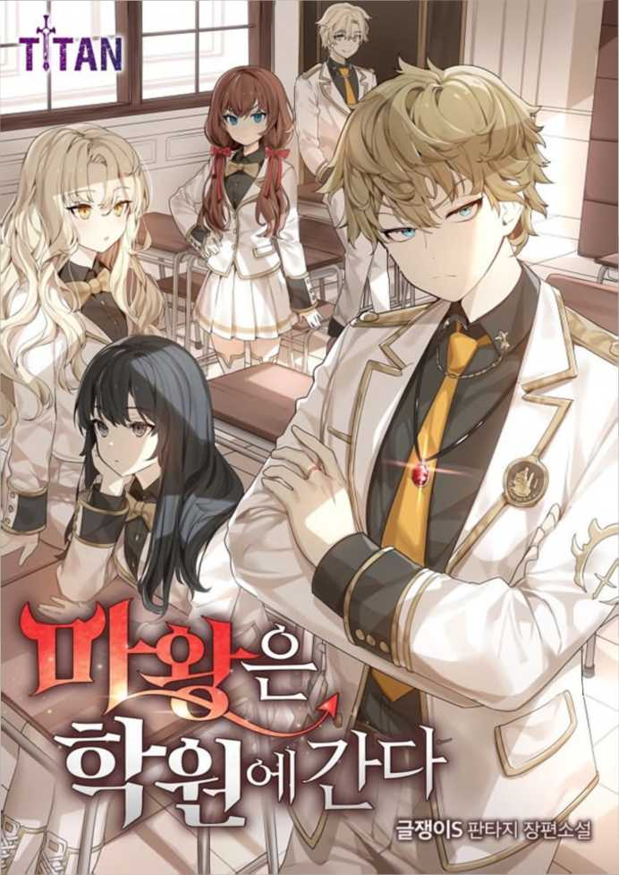

##!!## 마왕은 학원에 간다 Chapter 150화
##!!## The Demon Prince Goes to Academy Chapter 0
150화
150th episode
“게이트 사용.”
"Use gate."
“일단 대기표를 받고….”
"Once we get the waiting list....â€
“이거나 보셔.”
"or look."
“ I，，
“ I，，
인간의 땅에서 황실의 이름이 먹히 지 않는 곳은 존재하지 않는다. 인 간의 땅 전체가 제국의 영토니까.
There is no place in the human land where the name of the imperial family does not work. The whole land of the human race is the territory of the Empire.
문장의 진위여부를 확인하자마자 묻지도 따지지도 않고 게이트 우선 이용권이 주어졌다.
As soon as the authenticity of the sentence was confirmed, the first use of the gate was given without asking or questioning.
비용지불까지 면제되는 것 같았지 만，차후 문제될지도 모르기에 비용 은 제대로 지불했다. 게이트 우선이 용만으로도 충분히 부당이득 같은 데, 이용료까지 면제받으면 괜히 뒤 가 켕기니까.
The cost seemed to be waived, but the cost was paid properly because it might be a problem in the future. It seems unfair enough to use the gate first, but if you get exempted from the fee, you'll have to leave behind.
“……나쁜 짓 하는 것 같아.”
"......I think you're doing something bad."
엘렌의 말에 나는 고개를 저었다.
I shook my head at Ellen's words.
“유사시에 사용하라고 준걸 유사시 에 사용하는 건데 이게 왜 문제냐?”
"What's wrong with what I gave you to use in case of emergency?"
따지자면 이게 유사시 맞잖아.
If I were to say, it's an emergency.
여행 계획이 아예 다 엎어질 판인 데 이게 유사시 아니면 뭐야?
The whole trip plan is going to fall apart, so if it's not an emergency, what's this?
아니, 애초에 샬롯이 이럴 줄 알고 나한테 황실의 문장을 준 거 아닐 까? 이건 좀 너무 나갔나? 샬릇이 여기까지 알 리는 없나?
No, you didn't give me the imperial sentence because you knew Charlotte would do this in the first place? Is this a little too much? How could Charlotte know this far?
“…정신승리?”
"...spiritual victory?"
“…여기서 그 말이 왜 나오는데? 그리고 정신승리 아니거든?!”
"...why do you say that here? And it's not a mental victory!"
그 능력에 그 능력자 수준하고는.
at the level of one's ability
이런 의미로 말한 거지 너!
That's what you meant!
그리고 정신승리가 아니라 자기암 시야!
And it's not psychic victory, it's self-cancer vision!
“꼬우면 넌 이틀 뒤에 오던가.”
"If you're in trouble, you can come in two days."
“•••아냐.” 결국 자기도 좋으면서 질척대긴.
"No, he's good, but he's clingy.
나와 엘렌은 황실 문장이라는 하이 패스 아이템으로 차후의 경유지 대기 열도 죄다 무시해서 단 하루 만에 에 그시안 전진기지에 도착할 수 있었다.
Me and Ellen were able to arrive at the Gesian forward base in just one day, ignoring all the waiting rows for future security with a high pass item called imperial sentences.
* * *
* * *
에그시안 전진기지는 다크랜드에 건설된 인간의 첫 번째 기지였다.
The Egsian forward base was the first human base built in Darkland.
여기에서 마계대전을 위한 진군이 시작되었으며，이곳을 통해 진군했 던 군세들이 돌아왔다.
From here, the march for the Magyeh War began, and through this place the troops returned.
출발점이자 귀환점.
The starting point and the returning point.
그것이 에그시안 전진기지다.
That's the Eggsian forward base.
［이벤트 발생 - 다크랜드 모험］
[Event Occurrence - Darkland Adventures]
［설명 : 다크랜드에서의 모험을 무 사히 완료하십시오.］
[Explanation: Complete your adventure in Darkland.ï¼½
［보상 : 성과에 따라 보상이 달라 집니다. 뺀질거리지 말고 많은 성과 를 올리세요.］
[Compensation: Compensation depends on performance. Don't be a pushover and make a lot of progress.ï¼½
그리고，서운하지 말라고 이벤트까 지 발생해줬다.
And it happened not to be upset.
그런데 이번 보상은 뭔지 알려주질 않는다. 많은 성과를 올리라는 말만 있을 뿐. 뺀질? 내가 뺀질대겠냐 여 기까지 와서?
But this reward doesn't tell us what it is. I'm only told to make a lot of progress. Minus? I'm not going to do anything about it's too late.
내가 그냥 휙 돌아가서 보상부터 받을까봐 이러는 게 분명하다.
I'm sure I'm just going to swing around and get compensation first.
뭘 줄 건데! 이래놓고 나중에 업적 점수 1점 줘놓고 뭐 준다고 말 안 했잖음. 이럴 거 같아서 불안해!
You said, "What are you going to give me?" You said, "I gave you a point on achievement, but you didn't say anything." I'm worried about this!
아무튼，현시점에선 저런 건 신경 쓰지 말자. 신경 쓰면 지는 거다.
Anyway, let's not worry about that at this point. You lose if you care.
“별로 다를 건 없네.”
"Not much different."
“다크랜드라고 해서 하늘이 시꺼멀 줄 알았냐.”
"Did you think the sky would be dark because of the dark land?"
마왕성이 있던 곳에는 하늘이 칙칙 했지만，여긴 그냥 평범한 세계와 크게 다를 게 없었다. 마왕성 때에 도 주변 환경이 척박하긴 했지만 하 늘은 그냥 흐린 거라 봐도 무방할 정도긴 했고.
The sky was gloomy where there was Ma Uranus, but it was not much different from the ordinary world here. During the time of Ma Uranus, the surrounding environment of the province was poor, but it was safe to say that it was cloudy.
“기지라기보단 그냥 도시인데?”
"It's not a base, it's just a city."
“그래 보이네.” 군대는 최소한을 남기고 거의 철수 했기에 이곳은 기지라기보단 도시라 는 이름이 어울릴 것 같았다. 대규 모 군사거점이었던 이 장소는 이제 모험가들이 몰려드는 새로운 핫스맛 이 되었다.
"It seems so." The army almost withdrew with the least left, so the name of the city rather than the base seemed to suit it. The site, which used to be a military stronghold of Daegyu, is now a new hot-sourced taste that attracts adventurers.
주변에 즐비한 건물들은 지금까지 지나쳐왔던 다른 도시들과 크게 다 를 게 없어보였다.
The surrounding buildings seemed to have little to do with other cities that had passed by.
하지만 사람이 달랐다.
But people were different.
군인들이 일률적인 장비로 무장했 다면，이곳의 사람들은 제각각의 방 식으로 다들 무장하고 있었다.
If the soldiers were armed with uniform equipment, the people here were armed in different ways.
대부분이 모험가들이기에 중장갑보 단 경장갑으로 무장했다는 게 군인 들과 다른 부분이지만.
Most of them are adventurers, so they are armed with heavy armor.
민간인들의 숫자가 적고，수많은 뜨내기들이 드나드는 지금까지와는 전혀 다른 도시.
a city of few civilians and quite different from the past, frequented by countless idlers.
이를테면 모험가들의 도시인 셈이다.
It's a city of adventurers, for example.
“모험가 길드로 가자.”
"Let's go to the guild of adventurers."
“그려.”
"Draw."
마계대전이 끝난 건 올해 초의 일 이다. 그러니 마계대전 종전 이후로 는 이제 기껏해야 반년이 지났을 뿐 이다. 그렇기에 다크랜드에 대한 탐 색도 이제 막 붐이 생겼을 뿐，개척 은 그리 많이 진행될래야 그럴 수가 없었다.
It was the beginning of this year that the Magye Daejeon ended. So it's only been half a year since the end of the war. Therefore, the search for Darkland has just boomed, and the development has not been able to do so much.
일확천금을 노리고 모험가들이 이 제 막 쏟아져 들어오고 있을 뿐이 다. 아직 다크랜드 탐험은 초창기에 불과하다.
Adventurers are just pouring in for a fortune. The Darkland expedition is still only in its infancy.
그래서 베테랑 모험가도，이제 막 모험가가 되려는 신출내기들도 이 에그시안 전진기지에 몰려들고 있는 중인 거다.
That's why veteran adventurers and newcomers who are just about to become adventurers are flocking to the Eggsian forward base.
뜨내기들인 모험가들이 몰리니 그 들에게 숙소를 제공할 여관업이 발 달하고，장비 및 보급품을 파는 상 인들이 몰려들고，일확천금한 모험 가들을 위한 유흥업이 발달하는 건 당연한 이치였다.
It was natural that the inn business to provide accommodation for the hordes of adventurers was in full swing, the merchants selling equipment and supplies gathered, and the entertainment business for the rich adventurers developed.
그리고 그 일확천금한 돈을 날로 먹으려는 음지의 세력들도 성장할 거다. 도박장도 있을 테고，도둑놈들 도 많을 거다.
And there will be growing dark forces trying to make the money go away. There'll be a gambling house, and there'll be a lot of thieves.
도시의 팽창속도가 엄청나다는 건 오가는 사람들의 숫자와 새로 지어 지고 있는 무수한 건물들로도 알 수 있었다.
The speed of the city's expansion was enormous, with the number of people coming and going and countless new buildings being built.
그러니 신규 모험가로 등록하려는 이들이 모험가 길드에 들끓는 것도 당연한 이치였다.
Therefore, it was natural for those who wanted to register as new adventurers to be infested with the guild of adventurers.
모험가가 되기 위해선 어떤 자격도 요건도 필요치 않았다.
To be an adventurer, no qualifications or requirements were required.
누구나 모험가가 될 수 있다.
Anyone can be an adventurer.
다만 최저등급인 F급으로 시작해 서 실적을 쌓아 올라가는 시스템이 다. 당연히 F급 모험가는 길드로부 터 그 어떤 지원도 받을 수 없다.
However, it is a system that starts with the lowest grade, grade F, and builds up performance. Naturally, an F-rated adventurer cannot get any support from the Guildroboo site.
모험가 자격증이란 F급인 상태에 선 그 어떤 권리도 자격도 없다. 그 러니 남발해도 괜찮은 거다. 모험가 길드는 모험가들에 대한 관리는 하 지 않는 모양이었다. 할래야 할 수 가 없겠지.
An adventurer's certificate has no right or qualification to stand in a class F state. It's okay to overdo that runny. The adventurer Guild did not seem to manage the adventurers. I can't do it.
그나저나 황도에 처음 도착했을 때 모험가 놈들은 대체 뭐 하는 거지 싶었는데，돌고 돌아 내가 직접 모 험가 노릇을 하러 왔다니.
By the way, when I first arrived at Hwangdo Island, I wondered what the adventurers were doing, but I turned around and came here to play the role of a tough guy myself.
세상 일 참 모르겠단 말이지.
I don't know the world.
자격증 발급절차는 매우 간단했기 에 그리 오래 기다리지 않아도 곧 신분증과 비슷한 형태의 모험가 자 격증을 발급받을 수 있었다.
The process of issuing certificates was very simple, and without waiting too long, one could soon get a certificate of adventurer's identity similar to that of an ID card.
나와 엘렌 모두 지금은 F등급이다.
Both I and Ellen are now grade F.
북적거리는 모험가 길드 카운터에 서 엘렌은 멍하니 서있었다. 용건이 끝났는데도 엘렌은 발걸음을 떼지 못하고 있었다.
At the bustling adventurer guild counter, Ellen stood blankly. Even after the business was finished, Ellen was still on her feet.
왜 저러는지 알고 있다.
I know what's wrong with him.
엘렌의 시선이 향한 곳 끝에 사진 들이 걸려있었다. 거대한 사진들이 꽤나 높은 곳에 걸려있다.
Photos hung at the end of Ellen's gaze. Huge pictures hang quite high.
그리고 그 사진의 밑에 이름이 적 혀 있다.
And there is a name written on the bottom of the picture.
［모험가 길드 명예의 전당］
[Guild Hall of Fame of Adventure]
［라그드나 올피］
［셰이 딘］
[Ragna Olpi]
[Shay Dean]
［라간 아르토리우스］
[Lagan Arthorius]
［멀러른］
[Distant]
［세이자리아］
[Sayaria]
다섯 명의 사진. 그 가운데에 라간 아르토리우스의 사진이 걸려있었다.
A picture of five people. There was a picture of Lagan Arthorius hanging in the middle.
마왕을 처치한 다섯 명의 용사 일행.
A group of five warriors who killed the devil.
그들도 모험가였다.
They were adventurers, too.
모험가는 SS랭크가 끝이다.
The adventurer's SS ranking is the end.
저들은 마계대전 이후 모험가 길드 에서 모험가 랭크를 전설급으로 상 향조정했다. 애초에 없는 등급이다.
After the Battle of Magye, they moved the adventurer's rank to legend in the guild. It's a grade that wasn't in the first place.
역사상 최고의 모험가들로서 전부 영구결번 비슷한 게 된 거다.
As the greatest adventurers of all time, they've all become like permanent absenteeism.
엘렌은 모험가들의 전설이 된 자신 의 오빠가 사진으로 박제된 모습을 하염없이 쳐다보고 있었다.
Ellen was constantly looking at her brother, who had become the legend of adventurers, as he was stuffed with photographs.
무슨 생각을 하고 있을까.
What are they thinking?
적어도，자랑스러워하고 있는 것처 럼 보이진 않았다.
At least, I didn't see any rum of pride.
* * *
* * *
모험가 랭크를 굳이 올려야 할 필 요는 없다. 모험가 자체는 어차피 방 학 때 한 달 하고 말아버릴 거니까.
There is no need to raise the adventurer's rank. The adventurer himself is going to spend a month on vacation anyway.
나와 엘렌이 모험가 등록을 한 건 그냥 부수적인 일이다. 우리가 하는 일이 돈도 될 수 있다면 좋은 거니까. 그러니 우리는 의뢰를 받고 움직이기 보단 일단 움직이고 난 다음 특이사항 을 발견하면 길드에 보고하는 것으로 보수를 받는 식으로 움직일 거다.
It's just incidental for me and Ellen to register as adventurers. It's good if what we do can be money. So instead of being asked to move, we're going to move, and then when we find something unusual, we're going to be paid to report it to the guild.
물론 께 괜찮아 보이는 의뢰가 있으 면 그걸 수행해도 나쁘진 않을 거다.
Of course, if you have a request that seems okay to you, it won't be bad to carry it out.
엘렌이 오빠랑 같은 시작점을 경험 하는 것에 무슨 감흥을 느끼고 있는 지는 알 수 없었다.
I didn't know what Ellen was feeling about experiencing the same starting point as her brother.
“세인츠 포인트로 가려면 마차를 타야 돼.”
"You have to take a carriage to get to the Seine's Point."
“ 必 ，，
“ 必 ，，
一
一
황도가 아니기에 트램도 마력열차 도 없다. 이제부턴 원시적인 이동수 단을 사용해야 한다.
There are no trams or horse power trains because they are not yellow. From now on, you should use a primitive movable number terminal.
세인츠 포인트의 미리 얘기해둔 합 류장소로 가서 엘레리스와 우연찮게 만난 척하고 일행이 된다. 그 뒤로 는 세인츠 포인트에 있는 모험가 길 드 지부를 통해 일을 알선 받건 우 리 마음대로 돌아다니건 뜻대로 하 면 된다.
Go to the previously mentioned Hap Ryujang place of Saints Point and pretend to meet Elleris by chance and become a party. After that, you can arrange your work through the adventurer Guild de Branch at Saints Point, or go around freely.
나와 엘렌은 근처에 있는 마차역으 로 향했다.
Me and Ellen headed for the nearby carriage station.
여기저기로 향하는지 수많은 마차 들이 늘어서있었다.
There were a lot of carriages lined up to see if they were heading here and there.
“세인츠 포인트로 가려고 하는데요.”
"I'd like to go to Saints Point."
“아，그럼 이걸 타라. 가격은 인당 은화 두 개다.”
"Oh, then ride this. The price is two silver coins per person."
엘렌은 은화를 네 개 지불했고，나 와 엘렌은 마차 수송칸에 탑승했다.
Ellen paid for four silver coins, and me and Ellen boarded the carriage carriage.
“한 명만 더 타면 출발하겠습니다!”
"One more ride and we'll leave!"
시간이 정해져있는 게 아니라 사람 이 다 타야 출발하는 모양이었다. 마차 수송칸에는 나와 엘렌 빼고 다 섯 명의 사람이 타있었다.
The time was not fixed, but it seemed that everyone would take a ride. There were five people in the carriage car except for me and Ellen.
그들이 엘렌을 곁눈질하는 게 빤히 보였다.
I could see them looking sideways at Ellen.
“어이구，어린 아가씨가 벌써부터 모험가를 해?”
"Oh, is a young lady already an adventurer?"
갑자기 질문을 받자 엘렌은 고개를 갸웃거렸다.
When suddenly asked, Ellen tilted her head.
“칼 들 힘은 있고?”
"Do you have the power to lift a knife?"
“아서，귀족 아가씬 것 같은데 다쳐.”
"Oh, I think you're a little noble, but you're going to get hurt."
“다른 꼬마가 한가락 하는갑지! 네 가 호위냐?”
"Is the other kid doing the same thing? Is that your guard?"
-어허허허!
-Hahahaha!
다들 아는 사이인지 어떤지 모르겠 는데 척 봐도 어린애들이 모험가들 모이는 장소에 있으니 신기한 모양 이었다.
I don't know if everyone knows it or not, but it seemed amazing to be in a place where young children gather together.
아무래도 귀족 소녀가 모험가 흉내 를 내려 한다 여기는 것 같았고，나 는 호위라 생각하는 것 같았다.
The noble girl pretends to be an adventurer. It seemed like here, and I thought it was a guard.
따지자면 그 반댄데 이 양반들아? 나보다 얘가 훨씬 더 치그든?
That's the kind of guy you're in, you guys. He's a lot more cheesy than I am.
뭔 일 나면 얘가 날 지켜줄걸?
If anything happens, she'll protect me.
“조심해라 꼬마야. 여기 그렇게 만 만한 데 아니니까.”
"Be careful, kid. It's not that easy here."
- 툭툭 내 옆에 앉은 삼십대 가량으로 보 이는 남자가 솥뚜껑 같은 손으로 내 어깰 툭툭 쳤다. 베테랑인지 어떤지 는 모르겠지만 기분은 좀 드러웠다.
- A man in his thirties sitting next to me tapped my shoulder with a pot lid. I don't know if he's a veteran or not, but his mood was a bit revealing.
확실히 우리 둘은 겉모습만 보면 풋내기가 맞고，실제로 풋내기기도 하니까.
Obviously, the two of us are green in appearance, and we are green in reality.
성질대로 하다가 엘렌까지 곤란하 게 만들지도 모른단 샬롯의 말 때문 에，괜한 오지랖 정도는 참고 넘어 갈 생각이었다.
Charlotte said she might make Ellen feel uncomfortable because of her temper, so I was going to endure the okay nosiness.
쓸데없는 싸움질까지 하고 싶진 않았다.
I didn't even want to fight uselessly.
여긴 템플이 아니다. 나와 엘렌은 칼 을 들고 있고 그건 이들도 마찬가지다.
This isn't Temple. Me and Ellen are holding a knife and so are they.
주먹질이 아니라 칼부림이 된다.
It's not a fistfight, it's a sword stroke.
“아이쿠.”
"Oh, my."
곧，마지막 승객이 탑승했다.
Soon, the last passenger was on board.
“안녕하십니까 다들?”
"Hello, everyone?"
검푸른 머리칼에 서글서글한 인상 의 젊은 남자였다.
A young man with dark blue hair and a gentle impression.
모험가들은 으레 그런지 안면은 없 는 사이인 것 같지만 다들 짧게 인 사를 나눴다.
Adventurers seemed to have no acquaintance, but they all exchanged greetings.
-자，출발합니다!
-Here we go!
마부의 말이 있었고，곧 마차가 덜 걱거리며 출발했다.
There was a horseman's horse, and soon the carriage set off with less concern.
마력열차에 익숙하다보니 마차의 덜컹거림이 익숙하질 않았다.
As I was used to the horse-riding train, I was not used to the rattle of the carriage.
엘렌은 내 맞은편에 앉아있었고， 마지막 승객인 젊은 남자는 내 옆에 있었다.
Ellen was sitting opposite me, and the last passenger, the young man, was beside me.
“오，나보다 어려보이는 친구를 다 보게 되다니. 안녕?”
"Oh, I can't believe I've seen all the friends who look younger than me. Hi, how are you?"
“아, 예.”
"Oh, yes."
그는 서글서글하게 웃으며 내게 손 을 건넸고，딱히 거절할 수도 없어 서 나는 그 손을 맞잡았다.
He gave me his hand with a gentle smile, and I held it together because I couldn't refuse it.
“나는 다리아 오스틴이야. 너는?”
"I'm Daria Austin. What about you?"
“라인하르트입니다.”
"This is Reinhardt."
“그런데 몇 살이야?”
"How old are you, by the way?"
“열일곱인데요.”
"I'm seventeen."
옆자리 남자는 계속 귀찮게 말을 걸어 댔다.
The man next to me kept on talking to me.
그런데 웃는 얼굴에 침 못 뱉는다 고，딱히 악의도 없어 보이는데 시끄 러우니까 닥치라고 할 수가 없었다. 세인츠 포인트까지 얼마나 걸릴지 도 모르는데 옆자리 사람한테 싫은 소리 하고 싶지도 않았다.
But I can't spit on my smiling face. It doesn't seem to be malicious at all, but I couldn't tell him to shut up because he was too shy. I don't know how long it will take to get to Saints Point, but I didn't want to say anything to the person sitting next to me.
오스틴은 자기가 올해로 스물이라고 했다. 자기도 꽤 어린 나이에 시작했 다고 생각했는데 나와 엘렌처럼 더 어려보이는 사람이 있어서 놀랐다고 물어보지도 않은 걸 중얼거렸다.
Austin said he was twenty this year. She thought she started at a fairly young age, but muttered something she didn't even ask if she was surprised to see someone who looked younger like me and Ellen.
“일행이야 둘은?”
"Are you two in a party?"
“네.，’
"Yes, sir."
나와 엘렌이 일행이라는 말에 오스 틴은 천천히 고개를 끄덕였다.
Os Tin nodded slowly at the news that I and Ellen were in the party.
“그럼 우리 일행에 들어올래? 세인 츠 포인트에서 일행들이 기다리고 있거든. 같이 움직이면 더 안전할 거 야. 일행 중에 B랭크 모험가도 있어. 베테랑이야. 그분 따라서 움직이면 안전할 거야. 나는 아직 F랭크지만.”
"Then why don't you join our party? I've got a group waiting for me at Sein Tseng Point. It'll be safer if we move together. There is also a B-rank adventurer in the party. You're a veteran. You'll be safe if you follow him. I'm still a Fank."
너희들 경력 쌓는 데에 도움이 될 거라는 게 오스틴의 말이었다.
Austin said it would help you build your career.
“됐어요.”
"No thanks."
하지만 엘렌은 들을 필요도 없다는 듯 딱 잘라 거절했다. 칼 같은 거절 에 오스틴이 살짝 무안해졌는지 뒤 통수를 긁적였다.
But Ellen flatly refused, as if she didn't have to listen. Austin was slightly embarrassed by the knife's refusal and scratched her head.
“일행이 그렇다네요.”
"They say so."
“아，그. 그래….”
"Oh, he. Yeah....â€
“어이 친구，집적대는 게 너무 티 나잖아.”
"Hey buddy, you're too obvious to be focused."
“그，그런 거 아닌데요….”
"Well, it's not like that....â€
옆에서 아저씨들이 야유를 보냈고， 오스틴의 얼굴이 벌게졌다. 오스틴 은 아무래도 엘렌에게 관심이 있었 던 모양이었다.
Next to him, the mates booed, and Austin's face made a profit. Austin must have been interested in Ellen.
오스틴뿐만 아니라 먼저 랐던 모험 가 아재들이 하는 얘기도 쓸데없는 이야기들 속에 귀담아둘만한 이야기 들이 있었다.
Not only Austin, but also the stories of the adventurer daddies who had been there before, were stories worth listening to.
“에그시안 북부는 아직 어렵대?”
"Is the Eggsian North still difficult.
“그렇지 뭐. 무사히 돌아오는 놈들
"Yes, I will. The ones who come back safe.
이 없어.”
There's no."
“대체 거기 뭐가 있는 거야?”
"What the hell is there?"
“몰라. 오크 군락이 있단 얘기도 있 고, 고블린 떼가 있단 얘기도 있고.”
"I don't know. There's an oak colony, there's a flock of goblins."
“저번엔 한 오십 명쯤 토벌대가 만 들어지지 않았어?”
"Aren't there about fifty punitive measures the other day?"
“죄다 실종이야.”
"I'm going missing."
“허아". 뭐가 있어도 엄청난 게
"Huh." Whatever it is, it's amazing.
있겠구만.”
There must be."
현재 이 지역에서 제일 위험한 지 역이라고 알려져 있는 장소，에그시 안 전진기지 북부에 대한 이야기가 주 화제였다.
The story of the northern part of the Egshi Anjin Base, known as the most dangerous area station in the area, was the main topic.
세인츠 포인트는 동쪽 진군로에 있 는 거점이라 상대적으로 안전했다.
Saints Point was relatively safe because it was a base on the east side of Jingun-ro.
에그시안 북부로 향하는 모험가들 이 대부분 돌아오질 못한다.
Most adventurers heading north of Eggsian never come back.
“남부는?”
"What about the South?"
“거긴 죄다 숲뿐이라던데. 뭐가 있 지도 않고.”
"I hear they're all in the woods. There's nothing there."
“이 주 넘게 내려갔는데 숲밖에 없 다잖아. 사막이랑 다를 게 뭐냐 이 거지.”
"I've been down for over two weeks, and there's only a forest. What's different from the desert?"
“그게 사실 숲이 아니라 결계란 얘 기가 있어. 미로 같은 거라고.”
"It's not a forest, it's a grain of salt. It's like a maze."
“뜬금없이 그 장소에 결계가 왜 있어?”
"Why is there a fault in the place all of a sudden?"
“그거야 모르지.”
"I don't know that."
“그게 아니라. 거기가 옛날에 드래곤 무덤이었는데 저주를 받아가지고….”
"Not that. It used to be a dragon's grave, but it was cursed....â€
쓰잘데기없는 괴소문들이 얽히고 얽혀서 진상을 아무도 알 수 없게 된 것 같았다.
There seemed to be a tangle and tangle of useless rumors that no one could get to the bottom of it.
이벤트 같은 게 발생할지도 모른다 고 생각했는데, 그러진 않았다.
I thought something like an event might happen, but it didn't.
헛소문이 너무 많으면 그것대로 뭐 가 뭔지 모르게 된다.
If there are too many false rumors, they just don't know what it is.
전진기지를 벗어난 마차는 옛 연합 군 진군로를 따라가고 있었다. 주변 풍경은 일반적인 자연과 크게 다르 지 않았다.
The carriage out of the forward base was following the old Allied advance route. The surrounding landscape was not much different from ordinary nature.
“딱히 어둡지도 않은데 다크랜드라 고 부르는 게 신기하지?” 오스틴은 마차 뒤편에 펼쳐진 경관 을 보며 멍하니 중얼거렸다.
"It's amazing to call it Darkland when it's not too dark, is it?" Austin murmured blankly at the view behind the carriage.
어둡지도 않고，사실 인간 세계와 별다를 것도 없다. 오히려 펼쳐진 드넓은 풍광은 아름답게 보이기도 한다.
It's not dark, and in fact it's not much different from the human world. On the contrary, the wide open landscape looks beautiful.
그런데 사람들은 다크랜드라고 부 른다.
But people call it Darkland.
“그러게요.”
"I know."
대답한 건 내가 아니라 엘렌이었다.
It was Ellen who answered, not me.
오스틴은 갑자기 엘렌이 대답하자 좀 놀란 것 같았다.
Austin seemed a little surprised when Ellen suddenly answered.
- 다각다각다각
- Polygonum.
마차는 천천히 움직이고 있었다. 일정한 리듬대로 움직이는 마차의 흔들거림을 느끼고 있으니 오랜 추 억이 생각났다.
The carriage was moving slowly. Feeling the sway of a carriage moving at a certain rhythm reminded me of the old days' worth of chow.
이거.
This
군대에서 두돈반 뒤에 타고 있을 때 그 느낌인데.
It's like when you're in the army behind Dudonban.
세상 불편한데 잠은 더럽게 잘 오 는 그 느낌.
It's so uncomfortable but it makes me feel like I can sleep.
“라인하르트.” 잠이 올락 말락 하는 그 시점에 나지막이 엘렌이 날 불렀다.
"Rainhardt," Ellen called me low at the time of falling asleep.
엘렌을 쳐다보자마자 뭔지는 잘 모 르겠지만，느낄 수 있었다.
As soon as I looked at Ellen, I could tell what it was, but I could feel it.
평소보다 좀 더 차분한 눈빛.
A calmer look than usual.
무언가를 각오한 눈빛.
a ready-made for something
이제 저 녀석의 눈빛만 봐도 무슨 생각을 하는지 어느 정도는 알 수 있다.
Now I can see to some extent what he's thinking just by looking into his eyes.
-다각…. 다각….
-Different... Diversion....
마차가 점점 느려진다.
The carriage slows down gradually.
느려질 이유가 없는데 느려진다.
There's no reason to slow down, but it slows down.
긴장해라.
Be on your toes up.
엘렌이 눈빛으로 그렇게 말하고 있 었다.
Ellen was saying that with her eyes.
주변 풍경들은 이미 변해있었다. 널찍한 대로를 벗어나 주변에 나무 들이 우거져가고 있었다.
The surrounding landscape had already changed. Trees were growing around the wide boulevard.
인적이 드문 곳으로 향하고 있는 것으로 추정된다.
It is presumed to be headed for a place where there are few people.
나는 마차 안쪽에 있던 모험가들이 태연한 척 하면서 각각 무기에 손을 얹고 있는 걸 볼 수 있었다.
I could see the adventurers inside the carriage, each putting their hands on a weapon, pretending to be calm.
아닌 척 하면서 우리 쪽을 곁눈질 하고 있었다.
He was looking sideways at us, pretending not to.
마치 정확한 타이밍을 기다리는 것 처럼.
As if waiting for the right timing.
사람을 조심해라.
Watch out for people.
벌써부터 그 순간이 다가왔다.
The moment has already come.
아무렇지도 않은 척 대화하면서 사 실 간 보고 있던 거였나.
Were you just pretending to be okay?
등골에 소름이 돋았다.
I got goose bumps in my spine.
-뻐억!
-Cuckoo!
“컥!，’
"Kuck!"
다음 순간，나는 엘렌이 검의 힐트로 옆자리에 앉은 사람의 인중을 무자비 하게 찍어버리는 걸 볼 수 있었다.
The next moment, I could see Ellen mercilessly stamping the philtrum of a person sitting next to her with a sword's heel.
“무，무슨!”
"What, what!"
그들이 뭔가 시도하기도 전에 엘렌 이 선공을 시작했다. 이럴 줄은 몰 탔는지 안쪽에 앉았던 모험가들이 놀라는 게 느껴졌다.
Ellen started the attack before they could even try something. I could feel the surprise of adventurers who had been sitting inside the mall.
특히 오스틴은 난데없이 벌어진 상 황에 경악했다.
Austin, in particular, was shocked by the sudden rise in the statue.
그것으로 확실해졌다.
That confirmed it.
오스틴은 한패가 아니다.
Austin is not one of them.
초능력을 사용해 육체를 강화한다.
Strengthen the body by using superpowers.
타입은 근접전투.
Type is close combat.
-쾅!
-Boom!
“끄억!”
"Knock!"
나는 마찬가지로 옆자리에 앉은 사 람의 옆구리를 힐트로 찍어버렸다. 이놈들이 뭘 하려고 했는진 모른다. 하지만，그 전에 우리가 뭔가 해버
I also hilt Sarah Ram's side in the next seat. I don't know what these guys were trying to do. But before that, we're doing something.
리면 아무 일도 일어나지 않는다.
Nothing happens if it happens.
여긴 다크랜드다.
This is Darkland.
법이 닿지 않는 곳이다.
It's out of the reach of the law.
여기선 오직 선빵만이 정의다.
In this place, only the first is justice.
